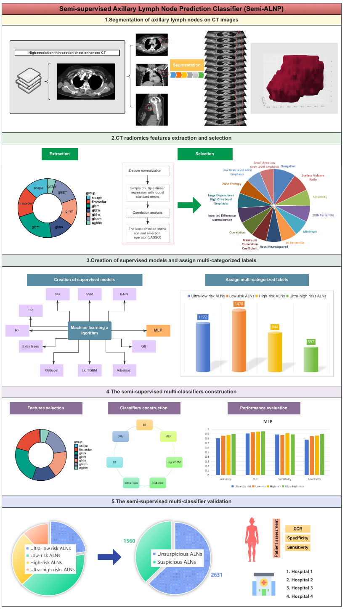
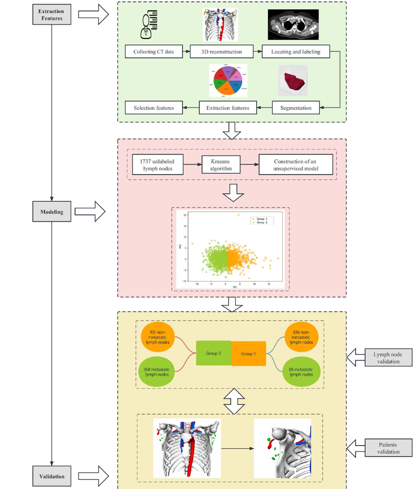
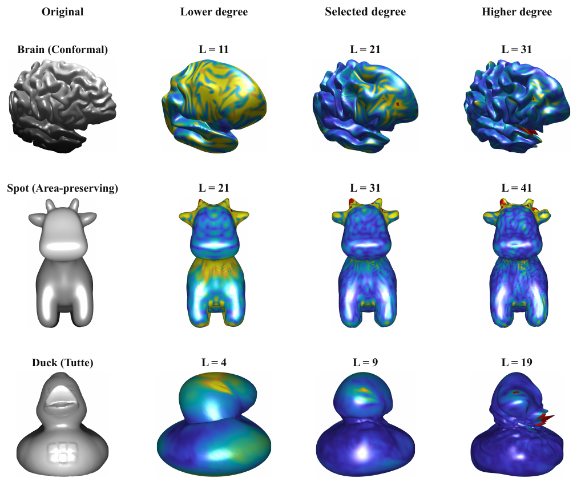
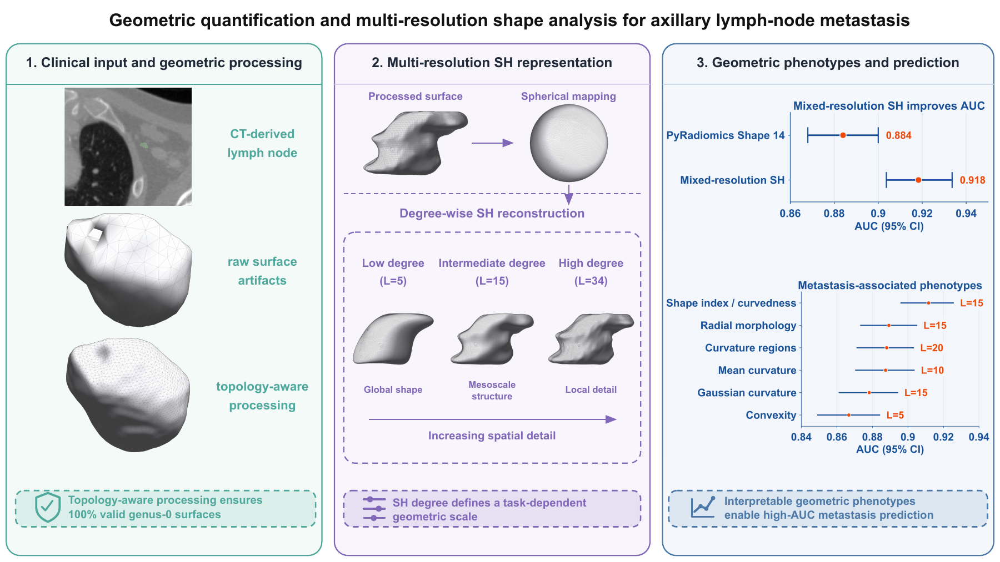

Evaluating axillary lymph node metastasis risks in breast cancer patients via Semi-ALNP: a multicenter study.
eClinicalMedicine. 2025;85:103311. doi:10.1016/j.eclinm.2025.103311
I am an applied mathematics student at Central South University, interested in the mathematical structures and numerical methods that make scientific computing more reliable.
B.S. in Applied Mathematics
GPA 4.0/4.0Rank 1/54
What I work on
My work connects geometric analysis, spectral methods, numerical PDEs, adaptive computation, and scientific computing for structured data.
Geometric representations, shape analysis, and structure-aware computational methods for scientific data.
Finite spectral geometry, spherical harmonics, and the conditioning of numerical representations.
Numerical methods, adaptive resolution, and spectral perspectives on nonlinear partial differential equations.
Selected work

eClinicalMedicine. 2025;85:103311. doi:10.1016/j.eclinm.2025.103311

International Journal of Surgery. 2024;110:5363–5373. doi:10.1097/JS9.0000000000001778

Unpublished manuscript.

arXiv preprint · 2026.
Professional profile
Explore my academic background, research experience, and current work.